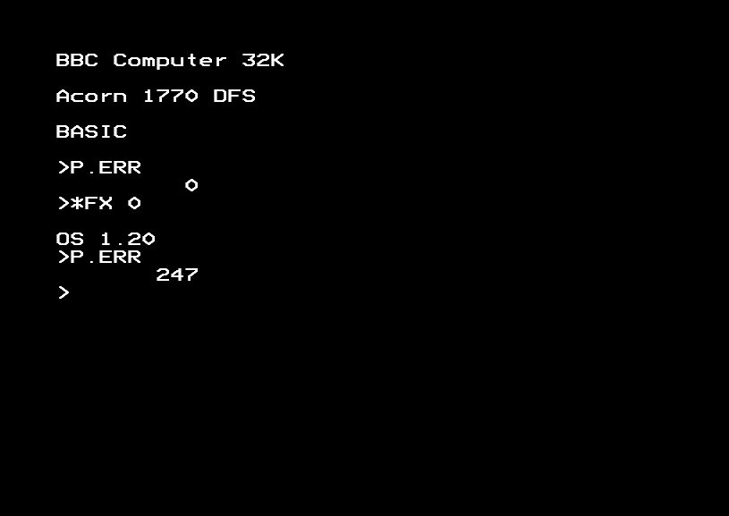

VDU 7; OSBYTE 0-14, 16, 18, 19, 117, 118, 124-126, 128-130, 136, 137, 144, 147, 149, 151, 154, 155, 160, 247; OSWORD 0-8; OSBYTE entry point; OSWORD entry point; *LINE; *CODE; Serial baud rate / sound buffer table; GSINIT; GSREAD; Keyboard handling routines - 1360 bytes (8.3%)
- §1. OSBYTE/OSWORD lookup table
- §2. OSBYTE 136 - Execute code via User Vector (*CODE)
- §3. Jumps to the User vector
- §4. OSBYTE 126 - Acknowledge detection of ESCAPE condition
- §5. OSBYTE 124 - Clear ESCAPE condition
- §6. OSBYTE 125 - Set ESCAPE condition
- §7. OSBYTE 137 - Turn on/off tape motor
- §8. OSBYTE 8 - Set RS-423 baud rate for transmitting data
- §9. OSBYTE 7 - Set RS-423 baud rate for receiving data
- §10. OSBYTE 9 - Duration of first colour
- §11. OSBYTE 10 - Duration of second colour
- §12. OSBYTE 2 - Select input stream
- §13. OSBYTE 13 - Disable events
- §14. OSBYTE 14 - Enable events
- §15. OSBYTE 16 - Select ADC channels
- §16. OSBYTE 129 - Read key within time limit
- §17. OSBYTE 130 - Read 'machine high order address'
- §18. Get free space from an input buffer, or used space from an output buffer
- §19. Get free bytes from RS-423 Input Buffer
- §20. OSBYTE 128 - Read ADC Channel, or get buffer status
- §21. OSBYTE - default entry point
- §22. osbyte166to255orOSWORD224to255
- §23. osbyte0to116
- §24. Unknown OSBYTE or OSWORD command
- §25. Check if it's ok to print a message
- §26. OSWORD - Default entry point
- §27. OSWORD 5 - Read a byte from I/O memory
- §28. OSWORD 6 - Write a byte to I/O memory
- §29. setUpDataBlock
- §30. OSBYTE 0 - Display version number
- §31. OSWORD 7 - Make a sound
- §32. OSBYTE 117 - Read VDU status
- §33. VDU 7 (.charBELL)
- §34. osword7Speech
- §35. addPitchAndDurationToSoundBuffer
- §36. OSWORD 8 - Define an envelope
- §37. getChannelNumberAndFlush
- §38. OSWORD 3 - Read interval timer
- §39. OSWORD 1 - Read system clock
- §40. OSWORD 4 - Write interval timer
- §41. OSWORD 2 - Write system clock
- §42. Write system clock or interval timer
- §43. OSWORD 0 - Read line from current input into memory
- §44. readLineInputBufferFull
- §45. readInputCharacter
- §46. OSBYTE 5 - Select printer type
- §47. OSBYTE 1 - Read/Write user flag; OSBYTE 6 - Set printer ignore character
- §48. OSBYTE 12 - Set keyboard autorepeat rate
- §49. OSBYTE 11 - Set keyboard autorepeat delay
- §50. OSBYTE 3 - Select output stream; OSBYTE 4 - Enable/disable cursor editing
- §51. OSBYTE 166 to 255 - read/write system variable
- §52. Table of buffer types and serial baud rates
- §53. OSBYTE 19 - Wait for vertical sync
- §54. OSBYTE 160 - Read VDU Variable
- §55. OSBYTE 18 - Reset soft keys
- §56. OSBYTE 118 - Set keyboard LEDs based on keyboard status
- §57. turnOnKeyboardLightsAndTestEscape
- §58. writeAToSystemVIARegisterB
- §59. OSBYTE 154 - Write to Video ULA's Video Control Register
- §60. OSBYTE 155 - Set palette value
- §61. gsinitForFilenameParsing
- §62. GSINIT - Initialise parsing of a string
- §63. GSREAD - Read one character by parsing the input string
- §64. brkBadString
- §65. Apply SHIFT to character in A
- §66. Modify character in A as if the CTRL key is being pressed
- §67. runBootString
- §68. OSBYTE 247 - Intercept BREAK
- §69. OSBYTE 144 - *TV
- §70. OSBYTE 147 - Write a byte to FRED
- §71. OSBYTE 149 - Write a byte to JIM
- §72. OSBYTE 151 - Write a byte to SHEILA
§1. OSBYTE/OSWORD lookup table.
Valid OSBYTEs are in the arbitrary ranges 0-21, 117-160, 166-255. The range 166-255 reads and writes to a contiguous range of memory locations, and are implemented by a single routine. Otherwise the reasoning behind these ranges is unclear. Perhaps 0-21 were anticipated (erroneously or otherwise) to be the more commonly used OSBYTEs? Valid OSWORDs are in the range 0-13, and OSWORDs 224-255 are sent through USERV.
.osbyteAndOSWORDRoutineTable = $e5b3 !word .osbyte0EntryPoint OSBYTE 0 - Display version number !word .osbyte1EntryPoint OSBYTE 1 - Read/Write user flag !word .osbyte2EntryPoint OSBYTE 2 - select input stream !word .osbyte3EntryPoint OSBYTE 3 - Select output stream !word .osbyte4EntryPoint OSBYTE 4 - Enable / disable cursor editing !word .osbyte5EntryPoint OSBYTE 5 - Select printer type !word .osbyte6EntryPoint OSBYTE 6 - Set printer ignore character !word .osbyte7EntryPoint OSBYTE 7 - Set RS-423 baud rate for receiving data !word .osbyte8EntryPoint OSBYTE 8 - Set RS-423 baud rate for transmitting data !word .osbyte9EntryPoint OSBYTE 9 - Duration of first colour !word .osbyte10EntryPoint OSBYTE 10 - Duration of second colour !word .osbyte11EntryPoint OSBYTE 11 - Set keyboard autorepeat delay !word .osbyte12EntryPoint OSBYTE 12 - Set keyboard autorepeat rate !word .osbyte13EntryPoint OSBYTE 13 - Disable events !word .osbyte14EntryPoint OSBYTE 14 - Enable events !word .osbyte15EntryPoint OSBYTE 15 - Flush selected buffer class !word .osbyte16EntryPoint OSBYTE 16 - Select ADC channels !word .osbyte17EntryPoint OSBYTE 17 - Start ADC conversions !word .osbyte18EntryPoint OSBYTE 18 - Reset soft keys !word .osbyte19EntryPoint OSBYTE 19 - Wait for vertical sync !word .osbyte20EntryPoint OSBYTE 20 - 'Explode' soft character definitions !word .osbyte21EntryPoint OSBYTE 21 - Flush specific buffer !word .osbyte117EntryPoint OSBYTE 117 - Read VDU status !word .osbyte118EntryPoint OSBYTE 118 - Set keyboard LEDs based on keyboard status !word .osbyte119EntryPoint OSBYTE 119 - Close Spool / Exec files !word .osbyte120EntryPoint OSBYTE 120 - Write key pressed data !word .osbyte121EntryPoint OSBYTE 121 - Keyboard scan from value in X !word .osbyte122EntryPoint OSBYTE 122 - Keyboard scan from 16 decimal !word .osbyte123EntryPoint OSBYTE 123 - Warn OS about printer going dormant !word .osbyte124EntryPoint OSBYTE 124 - Clear ESCAPE condition !word .osbyte125EntryPoint OSBYTE 125 - Set ESCAPE condition !word .osbyte126EntryPoint OSBYTE 126 - Acknowledge detection of ESCAPE condition !word .osbyte127EntryPoint OSBYTE 127 - Check for EOF on open file !word .osbyte128EntryPoint OSBYTE 128 - Read ADC Channel / get buffer status !word .osbyte129EntryPoint OSBYTE 129 - Read key within time limit !word .osbyte130EntryPoint OSBYTE 130 - Read machine high order address !word .osbyte131EntryPoint OSBYTE 131 - Read OSHWM (OS High Water Mark) !word .osbyte132EntryPoint OSBYTE 132 - Read HIMEM (start of screen memory) !word .osbyte133EntryPoint OSBYTE 133 - Read start of screen memory for given MODE !word .osbyte134EntryPoint OSBYTE 134 - Read text cursor position !word .osbyte135EntryPoint OSBYTE 135 - Read character at text cursor position !word .osbyte136EntryPoint OSBYTE 136 - Execute code via User Vector (*CODE) !word .osbyte137EntryPoint OSBYTE 137 - Turn on tape motor !word .osbyte138EntryPoint OSBYTE 138 - Put byte into buffer !word .osbyte139EntryPoint OSBYTE 139 - Select file options (*OPT) !word .osbyte140EntryPoint OSBYTE 140 - Select TAPE file system !word .osbyte141EntryPoint OSBYTE 141 - Select ROM file system !word .osbyte142EntryPoint OSBYTE 142 - Enter language ROM (at $8000) !word .osbyte143EntryPoint OSBYTE 143 - Pass service commands to sideways ROMs !word .osbyte144EntryPoint OSBYTE 144 - *TV !word .osbyte145EntryPoint OSBYTE 145 - Get byte from buffer !word .osbyte146EntryPoint OSBYTE 146 - Read a byte from FRED !word .osbyte147EntryPoint OSBYTE 147 - Write a byte to FRED !word .osbyte148EntryPoint OSBYTE 148 - Read a byte from JIM !word .osbyte149EntryPoint OSBYTE 149 - Write a byte to JIM !word .osbyte150EntryPoint OSBYTE 150 - Read a byte from SHEILA !word .osbyte151EntryPoint OSBYTE 151 - Write a byte to SHEILA !word .osbyte152EntryPoint OSBYTE 152 - Examine buffer status !word .osbyte153EntryPoint OSBYTE 153 - Put byte in input buffer !word .osbyte154EntryPoint OSBYTE 154 - Write to Video ULA's Video Control Register !word .osbyte155EntryPoint OSBYTE 155 - Set palette value !word .osbyte156EntryPoint OSBYTE 156 - Update ACIA Control Register and OS Copy !word .osbyte157EntryPoint OSBYTE 157 - Fast Tube BPUT !word .osbyte158EntryPoint OSBYTE 158 - Read byte from speech processor !word .osbyte159EntryPoint OSBYTE 159 - Write byte to speech processor !word .osbyte160EntryPoint OSBYTE 160 - Read VDU Variable !word .osbyte166to255EntryPoint OSBYTE 166 to 255 - Implemented via table lookup !word .uservJumper OSWORD 224-255 (unknown OSWORDs sent through USERV) OSWORD lookup table - effectively a continuation of the same table as above !word .osword0EntryPoint OSWORD 0 - Read line from current input into memory !word .osword1EntryPoint OSWORD 1 - Read system clock !word .osword2EntryPoint OSWORD 2 - Write system clock !word .osword3EntryPoint OSWORD 3 - Read interval timer !word .osword4EntryPoint OSWORD 4 - Write interval timer !word .osword5EntryPoint OSWORD 5 - Read a byte from I/O memory !word .osword6EntryPoint OSWORD 6 - Write a byte to I/O memory !word .osword7EntryPoint OSWORD 7 - Make a sound !word .osword8EntryPoint OSWORD 8 - Define an envelope !word .osword9EntryPoint OSWORD 9 - Read a pixel !word .osword10EntryPoint OSWORD 10 - Read character definition !word .osword11EntryPoint OSWORD 11 - Read palette !word .osword12EntryPoint OSWORD 12 - Write Palette !word .osword13EntryPoint OSWORD 13 - Read last two graphic cursor positions
§2. OSBYTE 136 - Execute code via User Vector (*CODE).
.osbyte136EntryPoint = $e657 LDA #0 A=0 fall through...
This is called in response to *CODE, *LINE, or an OSWORD in the range 224-255. By default this does nothing, but user code can intercept the USERV vector to provide new functionality for these calls. On Entry: A=0 called from *CODE / *FX 136 .osbyteX / .osbyteY are parameters A=1 called from *LINE XY = address of string A=224-255 called from OSWORD 224-255 .oswordX / .oswordY are parameters
.uservJumper = $e659 JMP (.vectorUSERV) Jump via USERV
§4. OSBYTE 126 - Acknowledge detection of ESCAPE condition.
If an ESCAPE condition has occurred, then this acknowledges (clears) it, informing the second processor of it via the Tube if present.
.osbyte126EntryPoint = $e65c LDX #0 X=0 BIT .escapeFlag check for ESCAPE flag BPL .osbyte124EntryPoint if (no ESCAPE flag) then branch (just clear the ESCAPE condition) LDA .escapeEffects get ESCAPE effects BNE + if (escape effects is non-zero) then branch (no effects) reset VDU paging counter close EXEC files purge all buffers Clear ESCAPE condition CLI allow interrupts STA .pagedModeCounter zero the number of lines printed since last halt in paged mode JSR .closeAndOptionallyOpenANewEXECFile close any open EXEC file (A=0, Z=0) JSR .flushAllBuffers clear all buffers + LDX #$FF X=$FF to indicate ESCAPE acknowledged fall through...
§5. OSBYTE 124 - Clear ESCAPE condition.
.osbyte124EntryPoint = $e673 CLC clear carry fall through...
§6. OSBYTE 125 - Set ESCAPE condition.
On Entry: The regular OSBYTE entry sets carry (meaning set the ESCAPE condition). If falling through from OSBYTE 124 above then carry is clear (meaning clear the ESCAPE condition).
.osbyte125EntryPoint = $e674 ROR .escapeFlag set/clear bit 7 of ESCAPE flag BIT .tubePresentFlag check if Tube is present BMI + if (Tube present) then branch RTS + JMP .tubeCopyESCAPEFlagToSecondProcessor Jumps into a Tube entry point
§7. OSBYTE 137 - Turn on/off tape motor.
On Entry: X = 0 to turn the motor off; otherwise turn the motor on
.osbyte137EntryPoint = $e67f LDA .serialULARegisterCopy get serial ULA control setting TAY Y=A ROL rotate left (shifts bit 7 into carry) CPX #1 if (X>=1, i.e. turn on motor) then set carry ROR rotate carry back in serialULA copy (bit 7) BVC .setSerialULADirectly ALWAYS branch
§8. OSBYTE 8 - Set RS-423 baud rate for transmitting data.
On Entry: X = baud rate
.osbyte8EntryPoint = $e689 LDA #%00111000 Once it's EOR'd with the next instruction, this value becomes %00000111 (set transmit baud rate) fall through...
§9. OSBYTE 7 - Set RS-423 baud rate for receiving data.
On Entry: X = baud rate
.osbyte7EntryPoint = $e68b EOR #%00111111 converts 7 -> $38 = %00111000 (set receive baud rate) converts $38 -> 7 = %00000111 (set transmit baud rate) STA .tempStoreFA store result LDY .serialULARegisterCopy get serial ULA control register setting CPX #9 } BCS .putNewSettingYInXAndReturn } is it 9 or more then branch (exit) AND .bufferTypeAndSerialBaudRatesTable,X and with byte from look up table STA .tempStoreFB store it TYA put Y in A ORA .tempStoreFA set the transmit or receive baud rate bits to 1 EOR .tempStoreFA zero the transmit or receive baud rate bits to 0 ORA .tempStoreFB set baud rate from value read from table lookup ORA #$40 set bit 6 EOR .tapeRS423SelectionFlag clear bit 6 if tape active (0=RS-423 or $40=TAPE) .setSerialULADirectly = $e6a7 STA .serialULARegisterCopy store serial ULA flag STA .serialULAControlRegister and write to control register .putNewSettingYInXAndReturn = $e6ad TYA put Y in A to save old contents .setXAndReturn = $e6ae TAX write new setting to X RTS
§10. OSBYTE 9 - Duration of first colour.
On Entry: Y = 0 X = new value (in 1/50 of a second)
.osbyte9EntryPoint = $e6b0 INY Y=1 CLC clear carry fall through...
§11. OSBYTE 10 - Duration of second colour.
On Entry: Y = 0 (or 1 if falling through from OSBYTE 9 call above) X = new value (in 1/50 of a second)
.osbyte10EntryPoint = $e6b2 LDA .videoULAFirstFlashingColourInterval,Y get mark period count PHA push it TXA get new count STA .videoULAFirstFlashingColourInterval,Y store it PLA get back original value TAY put it in Y LDA .videoULAFlashingColourIntervalCount get value of flash counter BNE + if (not zero) then branch STX .videoULAFlashingColourIntervalCount restore old value LDA .videoULAVideoControlRegisterCopy get current video ULA control register setting PHP push flags ROR rotate bit 0 into carry, carry into bit 7 PLP get back flags ROL rotate back carry into bit 0 STA .videoULAVideoControlRegisterCopy store it in RAM copy STA .videoULAControlRegister and ULA control register + BVC .putNewSettingYInXAndReturn ALWAYs branch
§12. OSBYTE 2 - Select input stream.
On Entry: X contains stream number X = 0 (keyboard selected, RS-423 disabled) X = 1 (RS-423 selected and enabled) X = 2 (keyboard selected, RS-423 enabled)
.osbyte2EntryPoint = $e6d3 TXA A=X AND #1 blank out bits 1 - 7 PHA push A LDA .rs423ControlRegisterCopy and get current ACIA control setting ROL Bit 7 into carry CPX #1 } ROR } if (X>=1, i.e. RS-423 enabled) } then set bit 7 of A, otherwise } clear it CMP .rs423ControlRegisterCopy compare this with ACIA control setting PHP push flags STA .rs423ControlRegisterCopy put A into ACIA control setting STA .acia6850ControlRegister and write to control register JSR .setRS423Active set up RS-423 buffer PLP get back P BEQ + if (new setting different from old) then branch BIT .acia6850DataRegister set bit 6 and 7 + LDX .currentInputBuffer get current input buffer number PLA get back A STA .currentInputBuffer store it RTS
§13. OSBYTE 13 - Disable events.
For information on Events, see .eventEntryPoint On Entry: X contains event number 0-9 to disable
.osbyte13EntryPoint = $e6f9 TYA Y=0; A=0 fall through...
§14. OSBYTE 14 - Enable events.
For information on Events, see .eventEntryPoint On Entry: A contains zero for disabling the event, or non-zero to enable the event. This value is 14 if entry by OSBYTE 14 (which enables the event), or zero if falling through from OSBYTE 13 above (which disables the event). X contains event number 0-9 to enable On Exit: Y contains previous value
.osbyte14EntryPoint = $e6fa CPX #10 } BCS .setXAndReturn } if X>9 then branch (set X from A } and return) LDY .eventEnabledFlags,X get old event enable flag STA .eventEnabledFlags,X store new value in flag BVC .putNewSettingYInXAndReturn and exit
§15. OSBYTE 16 - Select ADC channels.
Selects the range of channels for analogue to digital conversion (0-4) See .osbyte17EntryPoint On Entry: X contains channel number (1-4) or 0 to disable conversions Y = 0
.osbyte16EntryPoint = $e706 BEQ + if (X=0) then branch JSR .osbyte17EntryPoint start conversion + LDA .maximumADCChannelNumber get current maximum ADC channel number STX .maximumADCChannelNumber store new value TAX put old value in X RTS
§16. OSBYTE 129 - Read key within time limit.
On Entry: X and Y contains either: time limit in centi-seconds (Y=$7F max) or Y=$FF and X=-ve INKEY value for an instant read of a specific key
.osbyte129EntryPoint = $e713 TYA A=Y BMI .readNegativeKeyNumber if (Y negative) then branch CLI allow interrupts JSR .osbyte129Timed and go to timed routine BCS + if (carry set) then branch TAX then X=A LDA #0 A=0 + TAY Y=A RTS .readNegativeKeyNumber = $e721 TXA A=X EOR #$7F convert to keyboard input TAX X=A JSR .keyJumper then scan keyboard ROL put bit 7 into carry .setXYAndExit = $e729 fall through...
§17. OSBYTE 130 - Read 'machine high order address'.
Filing systems use 32 bit addresses, where $FF,$FF is used in the top two bytes to indicate the address is in the main (I/O processor) memory as opposed to the second processor memory. This routine returns the two values used for this purpose, namely $FF,$FF. On Entry: Carry set if entry is via OSBYTE 130 Carry may be clear if falling through from routines above, either reading a key (.readNegativeKeyNumber) or doing an ADC conversion (.setXYAndExit).
.osbyte130EntryPoint = $e729 LDX #$FF X=$FF LDY #$FF Y=$FF BCS + if (carry set, depends on entry point) then branch (exit) INX X=0 INY Y=0 + RTS
§18. Get free space from an input buffer, or used space from an output buffer.
For buffer numbers, see .bufferNumberKeyboard. On Entry: X=255 - buffer number
.countNegativeBuffer = $e732 TXA buffer number in A EOR #$FF invert it TAX X=A CPX #2 is X>=2 (C set if output buffer, get bytes used) .countBufferStartup = $e738 CLV clear V flag (meaning count buffer) BVC .countOrPurgeBuffer ALWAYS branch (count buffer) .purgeBuffer = $e73b BIT .allBitsSet set V flag (meaning purge buffer) (N flag also set) .countOrPurgeBuffer = $e73e JMP (.vectorCNPV) See .cnpEntryPoint for default implementation
§19. Get free bytes from RS-423 Input Buffer.
On Exit: carry set, all is OK carry clear, free space in buffer is low
.getRS423InputBufferFreeBytes = $e741 SEC to check for free bytes LDX #1 X=1 to point to RS-423 input buffer JSR .countBufferStartup and count it CPY #1 check the high byte of the length BCS + if (one or more) then branch (exit) CPX .rs423HandshakeExtent compare with minimum buffer space free + RTS
§20. OSBYTE 128 - Read ADC Channel, or get buffer status.
On Entry: On Exit: X=0 Y contains number of last channel converted (1-4); X = fire buttons X=channel number (1-4) X,Y contain 16 bit value read from ADC channel (See .osbyte17EntryPoint) X<0 Y=$FF X returns information about various buffers X=$FF (keyboard) X = number of characters in buffer X=$FE (RS-423 input) X = number of characters in buffer X=$FD (RS-423 output) X = number of empty spaces in buffer X=$FC (printer) X = number of empty spaces in buffer X=$FB (sound 0) X = number of empty spaces in buffer X=$FA (sound 1) X = number of empty spaces in buffer X=$F9 (sound 2) X = number of empty spaces in buffer X=$F8 (sound 3) X = number of empty spaces in buffer X=$F7 (Speech) X = number of empty spaces in buffer
.osbyte128EntryPoint = $e74f BMI .countNegativeBuffer if (X is -ve) then branch (count space free/used) BEQ .lastChannelConverted if (X is zero) then branch CPX #5 } BCS .setXYAndExit } if channel is not valid then } branch (set X and Y to 255 and } exit) LDY .highByteLastByteFromADCChannel1 - 1,X get last value read for channel of interest (high byte) LDA .lowByteLastByteFromADCChannel1 - 1,X get last value read for channel of interest (low byte) TAX X=low byte RTS .lastChannelConverted = $e75f LDA .systemVIARegisterB read system VIA port B ROR move high nybble to low ROR ROR ROR EOR #$FF and invert it AND #3 isolate the FIRE buttons LDY .adcLastChannelRead read last channel read STX .adcLastChannelRead store zero in last channel read TAX A=X bits 0 and 1 indicate fire buttons RTS
§21. OSBYTE - default entry point.
This entry point is executed for all OSBYTE calls. It routes the call through to one of the individual OSBYTE entry points by means of a table (see .osbyteAndOSWORDRoutineTable). Note: OSBYTEs 0-127 only return a value in the X register, whereas OSBYTEs 128-255 can return values in X,Y and carry. This fact is used to speed up access via the Tube.
.osbyteEntryPoint = $e772 PHA save A PHP save Processor flags SEI disable interrupts STA .osbyteA } STX .osbyteX } copy A,X,Y into zero page STY .osbyteY } LDX #.romServiceCallUnrecognisedOSBYTE set X so that (if necessary) we can signal to ROMs that an unrecognised osbyte is being attempted CMP #117 BCC .osbyte0to116 if (A < 117) then branch CMP #161 BCC .osbyte117To160 if (A < 161) then branch CMP #166 BCC .unknownOSBYTEOrOSWORD if (A < 166) then branch (with carry clear) CLC clear carry at this point OSBYTE number in A >= 166 fall through...
§22. osbyte166to255orOSWORD224to255.
.osbyte166to255orOSWORD224to255 = $e78a NOTE: Entry 161 and 162 in the table have special meanings, which are used here if entry is via OSBYTE, then carry is clear and we look up entry 161 in table if entry is via OSWORD, then carry is set and we look up entry 162 in table LDA #161 A = 161 ADC #0 Add carry .osbyte117To160 = $e78e SEC set carry SBC #95 if OSBYTE, converts A into range (22-66); if OSWORD then A=67 .indexToTable = $e791 ASL double A to get offset into table SEC set carry .osbyteOrOSWORDTableLookup = $e793 STY .osbyteY store Y TAY Y=A check for Econet intercept [There's a quirk here: The following instruction sets V if bit 6 of .econetOSCallInterceptionFlag is set. If bit 7 is clear as well, then we call whatever OSBYTE routine with V set, which has some unexpected side effects. A few OSBYTE routines rely on V being clear, So for example: *FX 206,64 - sets the .econetOSCallInterceptionFlag to 64 *FX 10,1 - set the flashing colour time This unexpectedly turns on RS-423 output, meaning you can't type at the keyboard any more! However, practically speaking there's no real reason you would need to set .econetOSCallInterceptionFlag to anything other than either zero or something with the top bit set so this probably never occurs in the wild. ] BIT .econetOSCallInterceptionFlag check Econet intercept flag (bit 7) we expect bit 6 to be clear! BPL .skipEconetCall if (no Econet intercept required) then branch (skip Econet check) TXA A=X CLV V=0 JSR .netvJumper to JMP via ECONET vector BVS .finishUpOSBYTEOrOSWORD if (returned with V set) then branch (finish up and exit) .skipEconetCall = $e7a2 read routine address from table and store in .tempStoreFA/B LDA .osbyteAndOSWORDRoutineTable + 1,Y get address from table (high byte) STA .tempStoreFB store as high byte LDA .osbyteAndOSWORDRoutineTable,Y get address from table (low byte) STA .tempStoreFA store as low byte LDA .osbyteA restore A LDY .osbyteY restore Y BCS .setCarryXAndJumpOSBYTE if (carry is set, i.e. an OSBYTE call) then branch OSWORD call. Set A to the value in the first byte of the parameter block LDY #0 LDA (.osbyteX),Y read first byte from parameter address block (XY) .setCarryXAndJumpOSBYTE = $e7b6 SEC set carry LDX .osbyteX restore X Finally, call the OSBYTE / OSWORD routine address For an OSBYTE call: A,X,Y are set to the three parameters sent to .OSBYTE. These are also stored in .osbyteA, .osbyteX and .osbyteY. Carry is set. Zero flag is set if X is zero. Negative flag is set if X has it's top bit set. V is clear. (But see .osbyteOrOSWORDTableLookup above for a 'bug') For an OSWORD call: .oswordA hold the OSWORD number. A is set to the first byte of the parameter block at the address held in .oswordX/.oswordY X is set to .oswordX, the lower byte of the address Y is set to zero. Carry is set. Zero flag is set if X is zero. Negative flag is set if X has it's top bit set. JSR .osbyteOrOSWORDJumper call OSBYTE/OSWORD routine address stored in (.tempStoreFA/B) .finishUpOSBYTEOrOSWORD = $e7bc ROR C=bit 0 PLP get back flags ROL bit 0=Carry PLA get back A CLV clear V RTS
.osbyte0to116 = $e7c2 LDY #0 Y=0 CMP #22 BCC .indexToTable if (A < 22) then branch OSBYTE 22 to 116: these are unknown OSBYTE calls fall through with carry set...
§24. Unknown OSBYTE or OSWORD command. Pass it onto ROMs for servicing..
.unknownOSBYTEOrOSWORD = $e7c8 PHP push flags PHP push flags .pullTwiceAndOfferCallToROMs = $e7ca PLA pull flags PLA pull flags JSR .osbyte143EntryPoint offer paged ROMs service 7/8 unrecognised osbyte/word BNE .romsDontRecogniseUnknownCommand if (ROMs don't recognise it) then branch LDX .osbyteX restore X JMP .finishUpOSBYTEOrOSWORD finish up .romsDontRecogniseUnknownCommand = $e7d6 PLP pull flags PLA and A BIT .allBitsSet set N and V flags RTS
§25. Check if it's ok to print a message.
Checks if the cassette filing system is in a critical (busy) state Check the catalogue status (are we currently doing a *CAT or equivalent) Checks the bits that allow printing short or long messages On Exit: A = 0 (and therefore Z set) means don't print messages A != 0 (and therefore Z clear) means messages can be printed
.shouldPrintMessage = $e7dc LDA .tapeCritical read cassette critical flag bit 7 = busy BMI .zeroAAndExit if (tape critically busy) then branch (exit) LDA #%00001000 check current catalogue status bit AND .fsStatusByte check tape filing system status byte has the catalogue status bit set BNE + if (catalogue bit set) then branch (exit) LDA #%10001000 A=%10001000 (these are the bits set if a message is required) AND .tapeCurrentOptionsByte AND with filing system options (short/long message bits) + RTS
§26. OSWORD - Default entry point.
This entry point is executed for all OSWORD calls. It routes the call through to one of the individual OSWORD entry points by means of a table (see .osbyteAndOSWORDRoutineTable, at the end of which is the list of OSWORD entry points).
.oswordEntryPoint = $e7eb PHA Push A PHP Push flags SEI disable interrupts STA .oswordA store A,X,Y STX .oswordX STY .oswordY LDX #.romServiceCallUnrecognisedOSWORD set X so that if necessary, we can signal to ROMs that an unrecognised OSWORD is being attempted CMP #224 BCS .osbyte166to255orOSWORD224to255 if (A >= 224) then branch (OSWORDs 224-255 call USERV) CMP #14 BCS .unknownOSBYTEOrOSWORD if (A >= 14) then branch (unknown OSWORD) OSWORD 0-13 ADC #68 add 68 to form pointer to table (68 to 81) ASL double it to form low byte of pointer ($88 to $A2) BCC .osbyteOrOSWORDTableLookup ALWAYS branch
§27. OSWORD 5 - Read a byte from I/O memory.
This allows the second processor to access main (first processor) memory across the Tube. On Entry: .oswordX/Y is the address of the five bytes of parameters: byte 0-3: 32 bit address of byte byte 4 : on exit byte read A is the LSB of the 32 bit address
.osword5EntryPoint = $e803 JSR .setUpDataBlock set up address of data block LDA (.tempStoreFA - 1,X) get byte STA (.oswordX),Y store it RTS
§28. OSWORD 6 - Write a byte to I/O memory.
This allows the second processor to access main (first processor) memory across the Tube. On Entry: .oswordX/Y is the address of the five bytes of parameters: byte 0-3: 32 bit address of byte byte 4 : byte to be written A is the LSB of the 32 bit address
.osword6EntryPoint = $e80b JSR .setUpDataBlock set up address LDA (.oswordX),Y get byte to write STA (.tempStoreFA - 1,X) write byte .zeroAAndExit = $e812 LDA #0 A=0 RTS
.setUpDataBlock = $e815 STA .tempStoreFA .tempStoreFA=A=low byte of address INY Y=1 LDA (.oswordX),Y get byte from block STA .tempStoreFB .tempStoreFB=high byte of address LDY #4 Y=4 .exitWithX1 = $e81e LDX #1 X=1 RTS
§30. OSBYTE 0 - Display version number.

Shows which version of the OS is installed. [Oddly this is implemented as an error message via the BRK mechanism. When running BASIC, BASIC's BRK handler is executed and so we have an extra newline and the last error number is set to 247. An alternative would have been to use the same printing method as used in *HELP (see .starHelp). Indeed earlier versions of the OS did just that.]
.osbyte0EntryPoint = $e821 BNE .exitWithX1 if (X is not zero) then branch (exit with X = 1 meaning OS 1.20) BRK print error message !byte $F7 error number !text "OS 1.20",0 error string with zero terminator
On Entry: .oswordX/Y is the address of eight bytes of parameters: byte 0-1: Channel ($HSFC as in the BASIC SOUND command) byte 2-3: Amplitude byte 4-5: Pitch byte 6-7: Duration Channel ------- H = hold bit (0-1) ensures that the existing sound currently playing on the given channel continues until the release phase of the envelope is totally finished before the next sound plays. Otherwise the sound is considered complete at the start of the release phase. The other sound parameters are then ignored. S = sync bits (0-2) is the number of future notes to be queued on other channels that are required before all the queued sounds start to play together at the same time. F = flush bit (0-1) stops any currently playing sound on the channel, forcing the new sound to play instead. C = channel (0-3). Channel 0 is the noise channel. If the high byte of the channel is $FF, then this is interpreted as a Speech command. Amplitude --------- The amplitude (loudness) is specified by a value in the range -15 (loudest) to 0 (silent). This is not a linear scale, with larger differences in volume between the louder sounds. Alternatively an envelope number can be specified (0-15). Pitch ----- Given a pitch number in the range 0-255, the range of playable musical notes is from B2 to D8 in scientific notation (C4 being middle C). This is a range of 63 notes, over five octaves. See https://en.wikipedia.org/wiki/Scientific_pitch_notation. [Personally, I think one octave lower would have been nice. We basically only have one octave below middle C and over four octaves above. The range of notes is a little too much on the high end] The notes on the musical scale can be best approximated by the values in the following table. This table is similar to one in the original User Guide, but with more accurate values. Be aware that the pitch you hear also depends on the channel you play it on. See .soundPitchOffsetByChannelTable. The table below gives the best pitch value to use to most accurately achieve the musical note, and for each channel (Channel 1 / Channel 2 / Channel 3) where they differ. Octave Note 2 3 4 5 6 7 8 --------------------------------------------------------------------------------------- C - 4 52 100 147/148/149 195/196/197 242/244/246 C# - 8 56 104 152/152/153 200/201/202 246/249/251 D - 12 60 108 155/156/157 203/204/206 249/251/254 D# - 16 64 112 160/160/161 207/209/210 - E - 20 68 115/116/116 163/164/165 211/213/214 - F - 24 72 120 168/168/169 214/216/217 - F# - 28 76 124 172/172/173 219/221/222 - G - 32 80 128 175/176/177 222/224/226 - G# - 36 84 131/132/132 179/180/181 226/228/229 - A - 40 88 135/136/136 183/184/185 229/231/233 - A# - 44 92 139/140/140 187/188/189 233/235/237 - B 0 48 96 144/144/145 192/193/194 237/240/242 - Pitch is ultimately passed to the sound chip as a 10 bit integer (0-1023), so by directly accessing the sound chip more accurate pitch can be achieved. This is done by sending data to the System VIA. See NAUG Section 21.2 Page 375 for a detailed description of the format required by the sound chip, and example code. Then see .setPitchNotNoise and see .sendToSoundChip for code to send the pitch. See .pitchLookupTableLow for the relationship between the 10-bit pitch and frequency. The best chip values for each musical note are as below: 10 bit Chip Value Frequency Note = Ideal Frequency Error ---------------------------------------------------------------------- 27 4629.63 Hz D8 = 4698.64 Hz 69.01 Hz 28 4464.29 Hz C#8 = 4434.92 Hz 29.36 Hz 30 4166.67 Hz C8 = 4186.01 Hz 19.34 Hz 32 3906.25 Hz B7 = 3951.07 Hz 44.82 Hz 34 3676.47 Hz A#7 = 3729.31 Hz 52.84 Hz 36 3472.22 Hz A7 = 3520.00 Hz 47.78 Hz 38 3289.47 Hz G#7 = 3322.44 Hz 32.96 Hz 40 3125.00 Hz G7 = 3135.96 Hz 10.96 Hz 42 2976.19 Hz F#7 = 2959.96 Hz 16.24 Hz 45 2777.78 Hz F7 = 2793.83 Hz 16.05 Hz 47 2659.57 Hz E7 = 2637.02 Hz 22.55 Hz 50 2500.00 Hz D#7 = 2489.02 Hz 10.98 Hz 53 2358.49 Hz D7 = 2349.32 Hz 9.17 Hz 56 2232.14 Hz C#7 = 2217.46 Hz 14.68 Hz 60 2083.33 Hz C7 = 2093.00 Hz 9.67 Hz 63 1984.13 Hz B6 = 1975.53 Hz 8.59 Hz 67 1865.67 Hz A#6 = 1864.66 Hz 1.02 Hz 71 1760.56 Hz A6 = 1760.00 Hz 0.56 Hz 75 1666.67 Hz G#6 = 1661.22 Hz 5.45 Hz 80 1562.50 Hz G6 = 1567.98 Hz 5.48 Hz 84 1488.10 Hz F#6 = 1479.98 Hz 8.12 Hz 89 1404.49 Hz F6 = 1396.91 Hz 7.58 Hz 95 1315.79 Hz E6 = 1318.51 Hz 2.72 Hz 100 1250.00 Hz D#6 = 1244.51 Hz 5.49 Hz 106 1179.25 Hz D6 = 1174.66 Hz 4.59 Hz 113 1106.19 Hz C#6 = 1108.73 Hz 2.54 Hz 119 1050.42 Hz C6 = 1046.50 Hz 3.92 Hz 127 984.25 Hz B5 = 987.77 Hz 3.51 Hz 134 932.84 Hz A#5 = 932.33 Hz 0.51 Hz 142 880.28 Hz A5 = 880.00 Hz 0.28 Hz 150 833.33 Hz G#5 = 830.61 Hz 2.72 Hz 159 786.16 Hz G5 = 783.99 Hz 2.17 Hz 169 739.64 Hz F#5 = 739.99 Hz 0.34 Hz 179 698.32 Hz F5 = 698.46 Hz 0.13 Hz 190 657.89 Hz E5 = 659.26 Hz 1.36 Hz 201 621.89 Hz D#5 = 622.25 Hz 0.36 Hz 213 586.85 Hz D5 = 587.33 Hz 0.48 Hz 225 555.56 Hz C#5 = 554.37 Hz 1.19 Hz 239 523.01 Hz C5 = 523.25 Hz 0.24 Hz 253 494.07 Hz B4 = 493.88 Hz 0.19 Hz 268 466.42 Hz A#4 = 466.16 Hz 0.25 Hz 284 440.14 Hz A4 = 440.00 Hz 0.14 Hz 301 415.28 Hz G#4 = 415.30 Hz 0.02 Hz 319 391.85 Hz G4 = 392.00 Hz 0.15 Hz 338 369.82 Hz F#4 = 369.99 Hz 0.17 Hz 358 349.16 Hz F4 = 349.23 Hz 0.07 Hz 379 329.82 Hz E4 = 329.63 Hz 0.19 Hz 402 310.95 Hz D#4 = 311.13 Hz 0.18 Hz 426 293.43 Hz D4 = 293.66 Hz 0.24 Hz 451 277.16 Hz C#4 = 277.18 Hz 0.02 Hz 478 261.51 Hz C4 = 261.63 Hz 0.12 Hz 506 247.04 Hz B3 = 246.94 Hz 0.09 Hz 536 233.21 Hz A#3 = 233.08 Hz 0.13 Hz 568 220.07 Hz A3 = 220.00 Hz 0.07 Hz 602 207.64 Hz G#3 = 207.65 Hz 0.01 Hz 638 195.92 Hz G3 = 196.00 Hz 0.07 Hz 676 184.91 Hz F#3 = 185.00 Hz 0.09 Hz 716 174.58 Hz F3 = 174.61 Hz 0.03 Hz 758 164.91 Hz E3 = 164.81 Hz 0.09 Hz 804 155.47 Hz D#3 = 155.56 Hz 0.09 Hz 851 146.89 Hz D3 = 146.83 Hz 0.05 Hz 902 138.58 Hz C#3 = 138.59 Hz 0.01 Hz 956 130.75 Hz C3 = 130.81 Hz 0.06 Hz 1012 123.52 Hz B2 = 123.47 Hz 0.05 Hz
.osword7EntryPoint = $e82d INY increment Y to read byte 1 of block LDA (.oswordX),Y read channel high byte 'HS' CMP #$FF check if it's $FF BEQ .osword7Speech if (high byte of channel is $FF) then branch (handle speech command) CMP #$20 if (channel high byte is $20 or more) then set carry LDX #.romServiceCallUnrecognisedOSWORD X = paged ROM service request 'unrecognised OSWORD call' BCS .pullTwiceAndOfferCallToROMs if (channel >= $2000) then branch (offer it to ROMs as unknown OSWORD) DEY point at start of block JSR .getChannelNumberAndFlush returns with carry set if flush is required, and A=channel number (0-3) ORA #4 convert channel number to buffer number (4-7) TAX X = buffer number BCC + if (carry clear) then branch JSR .flushSoundBufferX flush buffer LDY #1 Y=1 + JSR .getSyncNumberAndHold get sync number (0-3) (carry set if hold is required) STA .tempStoreFA .tempStoreFA = sync number PHP save flags LDY #6 } LDA (.oswordX),Y } get duration (low byte) PHA push it LDY #4 } LDA (.oswordX),Y } get pitch (low byte) PHA push it LDY #2 } LDA (.oswordX),Y } get amplitude (low byte) in the } range -15 to 0 (static volume) or } 1 to 4 (envelope controlled) At this point carry contains the 'hold' bit and .tempStoreFA contains the two 'sync' bits ROL multiply amplitude by two, and add carry into bit zero = hold bit SEC SBC #2 subtract 2 ASL } ASL } multiply by 4 ORA .tempStoreFA add sync value (0-3) To illustrate the changes made by the last six instructions, here is a table showing the changes at each step. Each row is a different value for the amplitude (values > 0 are the envelope number 1-4), and the columns show the result after each subsequent instruction. Amplitude Binary ROL SEC;SBC#2 ASL; ASL ORA .tempStoreFA h=hold bit ss=sync bits --------------------------------------------------------------------------------- 4 %00000100 %0000100h %0000011h %00011h00 %00011hss 3 %00000011 %0000011h %0000010h %00010h00 %00010hss 2 %00000010 %0000010h %0000001h %00001h00 %00001hss 1 %00000001 %0000001h %0000000h %00000h00 %00000hss 0 %00000000 %0000000h %1111111h %11111h00 %11111hss -1 %11111111 %1111111h %1111110h %11110h00 %11110hss -2 %11111110 %1111110h %1111101h %11101h00 %11101hss -3 %11111101 %1111101h %1111100h %11100h00 %11100hss -4 %11111100 %1111100h %1111011h %11011h00 %11011hss -5 %11111011 %1111011h %1111010h %11010h00 %11010hss -6 %11111010 %1111010h %1111001h %11001h00 %11001hss -7 %11111001 %1111001h %1111000h %11000h00 %11000hss -8 %11111000 %1111000h %1110111h %10111h00 %10111hss -9 %11110111 %1110111h %1110110h %10110h00 %10110hss -10 %11110110 %1110110h %1110101h %10101h00 %10101hss -11 %11110101 %1110101h %1110100h %10100h00 %10100hss -12 %11110100 %1110100h %1110011h %10011h00 %10011hss -13 %11110011 %1110011h %1110010h %10010h00 %10010hss -14 %11110010 %1110010h %1110001h %10001h00 %10001hss -15 %11110001 %1110001h %1110000h %10000h00 %10000hss At this point: bit 7 = 0 for an envelope number bits 3-6 = envelope number - 1 (0-3), or volume in range (15 to 0) bit 2 = h, the hold bit bits 0-1 = ss, the sync bits (0-3) JSR .addByteToBuffer transfer byte to the sound buffer BCC .markAsUsedAndSendToBuffer if (C set on exit, i.e. succesful transfer) then branch (send to buffer) .finishUpSound = $e869 PLA } PLA } failed to add to buffer, so pull } the values off and fall through to } exit via OSBYTE 117 PLP } fall through...
§32. OSBYTE 117 - Read VDU status.
.osbyte117EntryPoint = $e86c LDX .vduStatusByte get VDU status byte in X RTS
Generates a short tone. By default this plays a Treble C as a square wave for 0.3 seconds on channel 3. The frequency is as close as the sound chip can get to Treble C. It produces a 523.013Hz tone compared to the theoretical ideal 523.251Hz, and so is very close to the ideal pitch. The 523.013Hz figure for the frequency achieved takes into account that the OS changes the pitch slightly depending on the channel number (see .soundPitchOffsetByChannelTable). If it were played on channel 1 or 2, the frequency would not be as close to Treble C.
.vdu7EntryPoint = $e86f PHP push flags SEI disable interrupts LDA .soundBELLChannel get bell channel number in A AND #%00000111 clear all except bits 0-2 ORA #%00000100 set bit 2 (=channel number + 4) TAX X=A=channel number+4=buffer number LDA .soundBELLAmplitudeEnvelope get bell amplitude/envelope number JSR .insJumper store it in buffer X LDA .soundBELLDuration get bell duration PHA save it LDA .soundBELLPitch get bell pitch PHA save it .markAsUsedAndSendToBuffer = $e887 SEC set carry ROR .channel0Occupancy - .bufferNumberSound0,X and pass into bit 7 to indicate that channel is active BMI .addPitchAndDurationToSoundBuffer ALWAYS branch
.osword7Speech = $e88d PHP push flags INY Y=2 LDA (.oswordX),Y get byte at offset 2 PHA store it INY Y=3 LDA (.oswordX),Y get byte at offset 3 PHA store it The stack now holds the two bytes of the SOUND command that normally specify amplitude These are the last two of three bytes we are going to add to the buffer. The first byte is byte 0 from the LDY #0 Y=0 LDA (.oswordX),Y get byte LDX #.bufferNumberSpeech X=8 JSR .addByteToBuffer select speech buffer and pass A BCS .finishUpSound if (carry set, i.e. failed to add to buffer) then branch (restore stack and exit) ROR .speechBufferEmptyFlag clear bit 7 of buffer empty flag to show buffer is not empty fall through...
§35. addPitchAndDurationToSoundBuffer.
.addPitchAndDurationToSoundBuffer = $e8a4 PLA pull pitch JSR .insJumper enter it in buffer X PLA pull duration JSR .insJumper enter it in buffer X PLP pull flags RTS
§36. OSWORD 8 - Define an envelope.
On Entry: A = envelope number Y = 0 .oswordX/Y is the address of 14 bytes of parameters: byte 0: envelope number (also in A) byte 1: bits 0-6 length of each step in centi-seconds bit 7 clear means auto repeat byte 2: change of Pitch per step in section 1 (-128 to +127) byte 3: change of Pitch per step in section 2 (-128 to +127) byte 4: change of Pitch per step in section 3 (-128 to +127) byte 5: number of steps in section 1 (0 to 255) byte 6: number of steps in section 2 (0 to 255) byte 7: number of steps in section 3 (0 to 255) byte 8: change of amplitude per step during attack phase (-127 to +127) byte 9: change of amplitude per step during decay phase (-127 to +127) byte 10: change of amplitude per step during sustain phase (-127 to +127) byte 11: change of amplitude per step during release phase (-127 to +127) byte 12: target level at end of attack phase (0 to 126) byte 13: target level at end of decay phase (0 to 126)
.osword8EntryPoint = $e8ae SBC #1 } ASL } ASL } set up appropriate displacement to } storage area ASL } A=(A-1)*16 OR 15 ASL } ORA #%00001111 } TAX X=A (destination offset) LDA #0 A=0 (value to write) LDY #16 Y = loop counter .copyEnvelopeLoop = $e8bb CPY #14 BCS + if (Y >= 14) then branch (don't read from block, just store zero in envelope buffer) LDA (.oswordX),Y get byte from parameter block + STA .envelopeBuffer,X and store it in appropriate area DEX decrement X DEY decrement Y BNE .copyEnvelopeLoop if (not zero) then branch (loop back and do it again) RTS Note that envelope number is NOT transferred. The envelope number is not needed in the buffer since the address in the buffer determines the envelope number.
§37. getChannelNumberAndFlush.
On Exit: When Y = 0: A = channel number (0-3) C set if channel low byte > 15, i.e. if flush is required When Y = 1: A = Sync number (0-3) C set if channel low byte > 15, i.e. if hold is required
.getChannelNumberAndFlush = $e8c9 .getSyncNumberAndHold = $e8c9 LDA (.oswordX),Y get byte (channel parameter low byte or sync parameter low byte) CMP #$10 is it greater than 15, if so set carry AND #3 get hardware channel number INY increment Y to point to byte 1 of the parameters RTS
§38. OSWORD 3 - Read interval timer.
The interval timer is centi-seconds and 5 bytes long. On Entry: .oswordX/Y is the address for the five byte result
.osword3EntryPoint = $e8d1 LDX #.countdownIntervalTimer - (.timeClockA - 5) X is the offset from (clockA-5) to countdown timer BNE .readFiveBytesIntoBlock ALWAYS branch
§39. OSWORD 1 - Read system clock.
The system clock counts in centi-seconds since boot and is 5 bytes long. On Entry: .oswordX/Y is the address for the five byte result
.osword1EntryPoint = $e8d5 LDX .timeClockSwitch X=current system clock store pointer .readFiveBytesIntoBlock = $e8d8 LDY #4 Y = loop counter - LDA .timeClockA - 5,X read byte STA (.oswordX),Y store it in parameter block INX X = X + 1 DEY Y = Y - 1 BPL - if (Y >= 0) then branch (loop back and do it again) .exit22 = $e8e3 RTS
§40. OSWORD 4 - Write interval timer.
On Entry: .oswordX/Y is the address of the five byte value to set
.osword4EntryPoint = $e8e4 LDA #.countdownIntervalTimer - (.timeClockA - 5) A=15 is the offset from clockA to countdown timer BNE .writeFiveBytesFromBlock ALWAYS branch
§41. OSWORD 2 - Write system clock.
On Entry: .oswordX/Y is the address of the five byte value to set
.osword2EntryPoint = $e8e8 LDA .timeClockSwitch get current clock store pointer EOR #15 and invert to get inactive clock (toggle between 5 and 10) CLC clear carry (indicates write system clock) fall through...
§42. Write system clock or interval timer.
On Entry: carry clear indicates write system clock carry set indicates write interval timer
.writeFiveBytesFromBlock = $e8ee PHA store A TAX X=A LDY #4 Y=loop counter .writeClockLoop = $e8f2 LDA (.oswordX),Y transfer 5 bytes from out parameter block STA .timeClockA - 5,X to the clock or timer INX DEY BPL .writeClockLoop if (Y >= 0) then branch (loop) PLA restore A BCS .exit22 if (carry set, i.e. write to interval timer requested) then branch (exit) STA .timeClockSwitch write back current clock (5 or 10) into switch variable RTS
§43. OSWORD 0 - Read line from current input into memory.
On Entry: .oswordX/.oswordY - address of parameter block: byte 0: address of input buffer for result (low) byte 1: address of input buffer for result (high) byte 2: maximum line length byte 3: minimum acceptable ASCII code byte 4: maximum acceptable ASCII code
.osword0EntryPoint = $e902 LDY #4 Y=4 - LDA (.oswordX),Y copy bytes 2,3,4 to absolute addresses .osword0MaxLineLength,+1,+2 STA .osword0MaxLineLength-2,Y DEY decrement Y CPY #2 until Y=1 BCS - LDA (.oswordX),Y get address of input buffer (high byte) STA .osword0BufferAddressHigh store it in temporary buffer DEY decrement Y STY .pagedModeCounter Y=0 store in print line counter for paged mode LDA (.oswordX),Y get address of input buffer (low byte) STA .osword0BufferAddressLow and store in temporary buffer CLI allow interrupts BCC .readInputCharacter ALWAYS branch
.readLineInputBufferFull = $e91d LDA #.charBELL A=7 .retryReadWithoutIncrementingPosition = $e91f DEY decrement Y .retryReadIncrementingPosition = $e920 INY increment Y .outputCharacterAndReadAgain = $e921 JSR .OSWRCH and call OSWRCH fall through...
.readInputCharacter = $e924 JSR .OSRDCH read character from input stream BCS .exitWithNegativeAndCarryFlagsSet if (error occurred) then branch (exit) TAX X=A LDA .characterDestinationsAvailableFlags get character destination status ROR rotate the status twice to make ROR carry reflect the 'disable VDU driver' bit TXA restore character read BCS + if (vdu disabled) then branch (skip forward) LDX .twosComplimentOfNumberOfBytesInVDUQueue get number of items in VDU queue BNE .outputCharacterAndReadAgain if (not zero) then branch (output character and read again) + CMP #.charDELETE BNE + if (character is not DELETE) then branch forward CPY #0 BEQ .readInputCharacter if (Y is zero, i.e. first character) then branch (read next character) DEY decrement Y (position in buffer decrements) BCS .outputCharacterAndReadAgain ALWAYS branch back to otput the DELETE and read again + CMP #.charDisableVDUOrDeleteLine is it delete line (CTRL-U) BNE + if (not CTRL-U) then branch forward TYA Y=A BEQ .readInputCharacter if (we are still reading first character) then branch back the read character LDA #.charDELETE - JSR .OSWRCH } DEY } output DELETE until Y=0 BNE - } BEQ .readInputCharacter ALWAYS branch (read character again) + STA (.osword0BufferAddressLow),Y store character in designated buffer CMP #.charRETURN BEQ .outputNewlineAndExit if (carriage return entered) then branch CPY .osword0MaxLineLength check the line length BCS .readLineInputBufferFull if (buffer full) then branch (loop to ring bell) CMP .osword0MinASCIICharacter check minimum character BCC .retryReadWithoutIncrementingPosition if (less than minimum character) then branch (read at existing position) CMP .osword0MaxASCIICharacter check maximum character BEQ .retryReadIncrementingPosition if (equal to maximum character) then accept the character and move on BCC .retryReadIncrementingPosition if (less than maximum character) then accept the character and move on BCS .retryReadWithoutIncrementingPosition ALWAYS branch (reject character and continue) .outputNewlineAndExit = $e96c JSR .OSNEWL output CR/LF JSR .netvJumper call Econet vector .exitWithNegativeAndCarryFlagsSet = $e972 LDA .escapeFlag A=ESCAPE FLAG ROL put bit 7 into carry RTS
§46. OSBYTE 5 - Select printer type.
On Entry: X=0 ignore printer output X=1 parallel output X=2 RS-423 output (will act as sink if RS-423 is enabled using OSBYTE with A=3) X=3 user printer X=4 Econet printer X=5-255 user printer
.osbyte5EntryPoint = $e976 CLI allow interrupts briefly SEI disable interrupts BIT .escapeFlag check if ESCAPE is pending BMI .exit23 if (ESCAPE is pending) then branch (exit) BIT .printerBufferEmptyFlag check bit 7 for printer buffer empty BPL .osbyte5EntryPoint if (bit 7=0, not empty) then branch back and try again (wait until buffer is empty) JSR .selectPrinterType check for user defined routine LDY #0 Y=0 STY .osbyteY F1=0 fall through...
§47. OSBYTE 1 - Read/Write user flag; OSBYTE 6 - Set printer ignore character.
On Entry: OSBYTE 1: To read the user flag: Y=$00 To write the user flag: X=value to write, Y=$FF OSBYTE 6: X = value to write On Exit: X contains the previous value
.osbyte1EntryPoint = $e988 .osbyte6EntryPoint = $e988 ORA #$0280 - .mosVariablesMinus166 A set to read/write locations: At this point, A depends on the entry point. A is set up to affect a particular system variable: Entry via OSBYTE 1: $0281 (user flag) - .mosVariablesMinus166 Entry via OSBYTE 5: $0285 (printer destination) - .mosVariablesMinus166 Entry via OSBYTE 6: $0286 (printer ignore character) - .mosVariablesMinus166 BNE .readWriteSystemVariable ALWAYS branch
§48. OSBYTE 12 - Set keyboard autorepeat rate.
.osbyte12EntryPoint = $e98c BNE .osbyte11EntryPoint if (.osbyteX != 0; i.e. not resetting to defaults) then branch LDX #50 reset default delay and rate STX .keyboardAutoRepeatDelay set keyboard autorepeat delay LDX #8 set X=8 for default autorepeat rate fall through...
§49. OSBYTE 11 - Set keyboard autorepeat delay.
.osbyte11EntryPoint = $e995 ADC #$CF A=A+208 (carry set) So... A=219 if entered from OSBYTE 11 A=220 if entered from OSBYTE 12 fall through...
§50. OSBYTE 3 - Select output stream; OSBYTE 4 - Enable/disable cursor editing.
.osbyte3EntryPoint = $e997 .osbyte4EntryPoint = $e997 CLC clear carry ADC #$E9 A = A + 233 So... A=236 if entered from OSBYTE 3 A=237 if entered from OSBYTE 4 A=196 if entered from OSBYTE 11 A=197 if entered from OSBYTE 12 .readWriteSystemVariable = $e99a STX .osbyteX store X fall through...
§51. OSBYTE 166 to 255 - read/write system variable.
Set newValue = (oldValue AND .osbyteY) EOR .osbyteX On Entry: A = offset from .mosVariablesMinus166 of variable to read/write .osbyteX = X parameter from entry to OSBYTE .osbyteY = Y parameter from entry to OSBYTE On Exit: X = oldValue Y = value of next system variable
.osbyte166to255EntryPoint = $e99c TAY Y=A LDA .mosVariablesMinus166,Y read current value TAX preserve this in X AND .osbyteY } EOR .osbyteX } new value = (old value AND Y) EOR X STA .mosVariablesMinus166,Y store it LDA .mosVariablesMinus166+1,Y get value of next byte into A TAY Y=A .exit23 = $e9ac RTS
§52. Table of buffer types and serial baud rates.
This table has dual use. It is used to set the serial baud rate (using bits 0-5), and also to identify a buffer as being a sound buffer (bit 7): - bit 7 is set if buffer X is a sound buffer - bit 6 is not used (always set) - bits 3,4,5 indicate the serial receive baud rate - bits 0,1,2 indicate the serial transmit baud rate 111 = 75 baud 011 = 150 baud 101 = 300 baud 001 = 1200 baud 110 = 2400 baud 010 = 4800 baud 100 = 9600 baud 000 = 19200 baud
.bufferTypeAndSerialBaudRatesTable = $e9ad !byte %01100100 Keyboard 9600 baud (default) !byte %01111111 RS-423 Input 75 baud !byte %01011011 RS-423 output 150 baud !byte %01101101 serial printer 300 baud !byte %11001001 sound0 1200 baud !byte %11110110 sound1 2400 baud !byte %11010010 sound2 4800 baud !byte %11100100 sound3 9600 baud !byte %01000000 speech 19200 baud
§53. OSBYTE 19 - Wait for vertical sync.
.osbyte19EntryPoint = $e9b6 LDA .verticalSyncCounter Read vertical sync counter - CLI allow interrupts briefly SEI disable interrupts again CMP .verticalSyncCounter has the vertical sync counter changed yet? BEQ - if (the values are the same) then branch (loop back) fall through...
§54. OSBYTE 160 - Read VDU Variable.
.osbyte160EntryPoint = $e9c0 LDY .vduVariablesStart + 1,X get VDU variable (often the high byte) LDA .vduVariablesStart,X get VDU variable (often the low byte) TAX RTS
§55. OSBYTE 18 - Reset soft keys.
.osbyte18EntryPoint = $e9c8 LDA #$10 set consistency flag STA .softKeyConsistencyFlag LDX #0 X=0 - STA .softKeyPage,X and wipe clean INX soft key buffer BNE - until X=0 again STX .softKeyConsistencyFlag zero consistency flag RTS
§56. OSBYTE 118 - Set keyboard LEDs based on keyboard status.
On Exit: carry is set if CTRL pressed N is set if SHIFT is pressed
.osbyte118EntryPoint = $e9d9 PHP remember flags SEI disable interrupts LDA #$40 switch on CAPS and SHIFT LOCK lights JSR .turnOnKeyboardLightsAndTestEscape via subroutine BMI .popRollAndExit if (negative, i.e. ESCAPE condition exists) then branch CLC clear V and C CLV calling main keyboard routine to JSR .keyJumper switch on lights as required .popRollAndExit = $e9e7 PLP recall flags ROL and rotate carry into bit 0 RTS
§57. turnOnKeyboardLightsAndTestEscape.
.turnOnKeyboardLightsAndTestEscape = $e9ea BCC .skipKeyboardLights if (carry clear) then branch LDY #7 switch on SHIFT LOCK light STY .systemVIARegisterB DEY Y=6 STY .systemVIARegisterB switch on CAPS LOCK light .skipKeyboardLights = $e9f5 BIT .escapeFlag check bit 7 of escape flag indicating that ESCAPE condition exists RTS
§58. writeAToSystemVIARegisterB.
.writeAToSystemVIARegisterB = $e9f8 PHP push flags SEI disable interupts STA .systemVIARegisterB write register B from Accumulator PLP get back flags RTS
§59. OSBYTE 154 - Write to Video ULA's Video Control Register.
bit 0 - Flash colour select (which of the flashing colours is displayed) 1 - Teletext select 2 - } These two bits determine the number of characters per row 3 - } from this table: 00 = 10 characters per row 01 = 20 characters per row 10 = 40 characters per row 11 = 80 characters per row 4 - CRTC clock rate select: 0 = low frequency clock for MODEs 4-7 1 = high frequency clock for MODEs 0-3 5 - } These two bits determine the width of cursor in bytes 6 - } from this table: 00 = 1 (MODEs 0,3,4,6) 01 = - undefined 10 = 2 (MODEs 1,5,7) 11 = 4 (MODE 2) 7 - Master cursor width. If set, causes a larger cursor to be displayed
.osbyte154EntryPoint = $e9ff TXA .setVideoULA = $ea00 PHP save flags SEI disable interrupts STA .videoULAVideoControlRegisterCopy save RAM copy of new parameter STA .videoULAControlRegister write to control register LDA .videoULASecondFlashingColourInterval get second flashing colour interval STA .videoULAFlashingColourIntervalCount set flash counter to this value PLP get back status RTS
§60. OSBYTE 155 - Set palette value.
On Entry: X contains value to write
.osbyte155EntryPoint = $ea10 TXA A = X .osbyte155Internal = $ea11 EOR #7 convert to palette format required for video ULA register PHP remember flags (including interrupt disable flag) SEI prevent interrupts STA .videoULAPaletteValue store as current palette setting STA .videoULAPaletteRegister store actual colour in register PLP restore flags (including interrupt disable flag) RTS
§61. gsinitForFilenameParsing.
.gsinitForFilenameParsing = $ea1d CLC clear carry fall through...
§62. GSINIT - Initialise parsing of a string.
Initialises the parsing of a given string (the 'input' string). Usually the string is part of an OSCLI command line where a string is expected (e.g. the filename in a *LOAD or the definition of a function key in *KEY). Leading spaces are ignored. The input string can be surrounded by double quotation marks. The string is terminated by a carriage return, or the second double quotation mark, or (optionally) a space character (useful for filename parsing). Once initialised, the parsing occurs using multiple calls to GSREAD. Each call produces one character result based on the input string. Control codes are disallowed in the input string. However the bar character '|' can be used to introduce control codes into the parsed output of GSREAD, and the '|!' combination is used to introduce top bit set characters. '|' followed by a character (see exceptions below) gives the ASCII value minus 64. e.g. |G = control code 7 (bell) |M = control code 13 (carriage return) '|!' adds 128 to the following character. '||' is parsed as a single bar character. '|"' is parsed as double quotes. '|?' is parsed as the DELETE character (character 127). These can be combined, e.g. '|!|A' results in character 129 being parsed. On Entry: Address for string stored at .stringInputBufferAddressLow/High Y = offset into string C = 0: string is terminated by a space (used for filename parsing) C = 1: otherwise (used e.g. for defining a soft key with *KEY) On Exit: .stringInputOptions bit 7 = double-quote character found at start bit 6 = don't stop on space character Y = offset of the first non-blank character A = first non-blank character Z is set if string is empty
.gsinitEntryPoint = $ea1e ROR .stringInputOptions Move carry into top bit of options JSR .skipSpacesAndCheckForCRInStringInput get character from text INY increment Y to point at next character CMP #.charDOUBLEQUOTE check for double quotes (") character BEQ + if (double quotes) then branch DEY decrement Y CLC clear carry + ROR .stringInputOptions bit 7 = double quote character found bit 6 = space is not a terminator CMP #13 set Z flag if CR found RTS
§63. GSREAD - Read one character by parsing the input string.
Parses a character from the input string previously set up by GSINIT. See .gsinitEntryPoint On Entry: Address for string stored at .stringInputBufferAddressLow/High Y = offset into string On Exit: A = character read X is preserved Y = index of next character to be read Carry is set if end of string reached Overflow (V flag) is set if the character read was interpreted as a control code
.gsreadEntryPoint = $ea2f LDA #0 A=0 .gsreadInternal = $ea31 STA .stringInputPlingFlag store A ($80 if previous character is '!', zero otherwise) LDA (.stringInputBufferAddressLow),Y read first character CMP #.charRETURN check for CR BNE .notRETURN if (not CR) then branch deal with RETURN character BIT .stringInputOptions check options BMI .brkBadString if (second quotation mark needed) then branch ('Bad string' message) BPL .finishedString ALWAYS branch (string ok, finished) .notRETURN = $ea3f CMP #.charSPACE check for SPACE BCC .brkBadString if (less then space, i.e. a control character) then branch ('Bad string' message) BNE .notSPACE if (it's not a space) then branch Deal with ' ' SPACE character BIT .stringInputOptions check bit 6 and 7 of .stringInputOptions BMI .finishUpReadClearV if (double-quote character found) then branch BVC .finishedString if (space character is a terminator) then branch (finished string) .notSPACE = $ea4b CMP #.charDOUBLEQUOTE check for DOUBLE QUOTE BNE .notDOUBLEQUOTE if (not double quote) then branch Deal with '"' DOUBLE QUOTE character BIT .stringInputOptions check options BPL .finishUpReadClearV if (string didn't start with a double quote) then branch We have found a string surrounded by double quotes. Check the next character isn't also a double quote, as that's an error. INY point at next character LDA (.stringInputBufferAddressLow),Y get it CMP #.charDOUBLEQUOTE check for double quotes (") character BEQ .finishUpReadClearV if (third double quote character found) then branch .finishedString = $ea5a JSR .skipSpacesAndCheckForCRInStringInput skip past any final SPACEs SEC carry set RTS .notDOUBLEQUOTE = $ea5f CMP #.charBAR check for bar '|' character BNE .finishUpReadClearV if (not bar) then branch deal with '|' vertical BAR character INY increase Y to point to next character LDA (.stringInputBufferAddressLow),Y get next character CMP #.charBAR check for '|' again BEQ .finishUpReadClearV if (bar found) then branch CMP #.charDOUBLEQUOTE check for double quotes (") character BEQ .finishUpReadClearV if (double quotes) then branch CMP #.charEXCLAMATIONMARK check for '!' character BNE + if (not '!') then branch deal with '|!' characters INY increment Y to next character LDA #$80 set bit 7 BNE .gsreadInternal loop back (sets bit 7 in next character) deal with remaining possible characters after the '|' BAR character + CMP #.charSPACE check for ' ' BCC .brkBadString if (less than space, i.e. a control code) then branch ('Bad string' message) CMP #.charQUESTIONMARK check for '|?' BEQ + if ('|?') then branch (set delete character) Remaining '|' followed by a character is treated as a control code JSR .implementCTRLCodes modify code as if CTRL pressed BIT .allBitsSet Set V flag BVS .finishUpReadX ALWAYS branch (finish up with V set) + LDA #.charDELETE delete character .finishUpReadClearV = $ea89 CLV clear V .finishUpReadX = $ea8a INY increment Y ORA .stringInputPlingFlag CLC clear carry RTS
.brkBadString = $ea8f BRK !byte $FD error number !text "Bad string",0 message (with zero terminator)
§65. Apply SHIFT to character in A.
Modify character in A as if the SHIFT key is being pressed
.implementSHIFT = $ea9c CMP #.charZERO BEQ .exit24 if ('0' character found) then branch (return) (SHIFT '0' = '0') CMP #.charAT BEQ .exit24 if ('@' character found) then branch (return) (SHIFT '@' = '@') BCC .flipBitFourIfNotCtrlCharacter if (A < '@') then branch the branch converts characters !"#$%&`()*+,-./ 123456789:;<=>? into 123456789:;<=>? !"#$%&`()*+,-./ CMP #.charDELETE BEQ .exit24 if (DELETE character found) then branch (return) (SHIFT DELETE = DELETE) BCS .flipBitFourOnly if (greater than $7F) then branch (toggle bit 4 and exit) At this point A>64 and A<127 The following code converts the following characters: ABCDEFGHIJKLMNOPQRSTUVWXYZ[\]^_£ abcdefghijklmnopqrstuvwxyz{|}~ into abcdefghijklmnopqrstuvwxyz{|}~£_ ABCDEFGHIJKLMNOPQRSTUVWXYZ[\]^ .flipBitsForShift = $eaac EOR #%00110000 flip bits 4 and 5 CMP #(.charUNDERSCORE XOR %00110000) } BEQ + } if (it was originally underscore } '_') then branch CMP #(.charPOUND XOR %00110000) } BNE .flipBitFourIfNotCtrlCharacter } if (it was NOT originally pound } '£') then branch + EOR #$1F EOR for converting pound symbol (which will become underscore when the EOR at .flipBitFourOnly is done) .flipBitFourIfNotCtrlCharacter = $eab8 CMP #.charSPACE + 1 } BCC .exit24 } if (control code) then branch } (return) .flipBitFourOnly = $eabc EOR #%00010000 flip bit 4 .exit24 = $eabe RTS
§66. Modify character in A as if the CTRL key is being pressed.
This is used both when the CTRL key is being pressed, and for parsing strings using GSINIT / GSREAD. See .gsinitEntryPoint. Input Output Notes ASCII CTRL Code Code ---------------------------------------------------------------------- 32-63 32-63 VDU 32-63 (unchanged) '@' 0 VDU 0 'A' 1 VDU 1 ... 'Z' 26 VDU 26 '[' 27 VDU 27 '\' 28 VDU 28 ']' 29 VDU 29 '^' 30 VDU 30 '_' 31 VDU 31 '£' 31 VDU 31 this is treated as a special case. it would otherwise result in VDU 0 [why the special case?] 'a' 1 VDU 1 ... 'z' 26 VDU 26 '{' 27 VDU 27 '|' 28 VDU 28 '}' 29 VDU 29 '~' 30 VDU 30 127 127 DELETE 128-255 flip bit 5 flip bit 5 [it's not clear why this is useful?]
.implementCTRLCodes = $eabf CMP #.charDELETE check for DELETE BEQ ++ if (DELETE found) then branch (exit) BCS .flipBitsForShift if (greater than $7F) then branch (process top bit characters) CMP #.charPOUND } BNE + } if (A is not '£') then branch LDA #.charUNDERSCORE A='_' + CMP #.charAT } BCC ++ } if (A < '@') then branch (return } unchanged) AND #%00011111 at this point A is between 64 to 126 inclusive zero bits 5 to 7 A is between 0 to 31 inclusive ++ RTS
.runBootString = $ead2 !text "/!BOOT",13
§68. OSBYTE 247 - Intercept BREAK.
On Exit: Z clear if no user BREAK intercept code otherwise Z is set or cleared by user BREAK code
.osbyte247EntryPoint = $ead9 LDA .breakInterceptJMPInstruction get first byte of user BREAK code (looking for 'JMP address') EOR #$4C produces 0 if JMP absolute instruction is present BNE + if (not zero) then branch (return) JMP .breakInterceptJMPInstruction jump to user BREAK code
On Entry: X=vertical shift of display Y=interlace disable flag On Exit: X=old vertical shift of display Y=old interlace disable flag
.osbyte144EntryPoint = $eae3 LDA .vduVerticalAdjust VDU vertical adjustment STX .vduVerticalAdjust store new value TAX put old value in X TYA put interlace flag in A AND #1 maximum value =1 LDY .vduInterlaceValue get old value into Y STA .vduInterlaceValue put new value into A + RTS
§70. OSBYTE 147 - Write a byte to FRED.
X is offset within page Y is byte to write;
.osbyte147EntryPoint = $eaf4 TYA STA .fredPage,X RTS
§71. OSBYTE 149 - Write a byte to JIM.
X is offset within page Y is byte to write
.osbyte149EntryPoint = $eaf9 TYA STA .jimPage,X RTS
§72. OSBYTE 151 - Write a byte to SHEILA.
X is offset within page Y is byte to write
.osbyte151EntryPoint = $eafe TYA STA .sheilaPage,X RTS